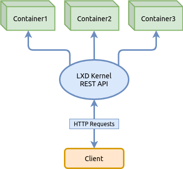
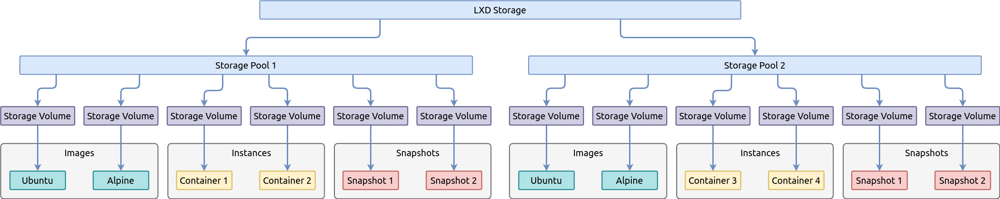
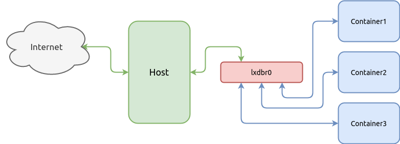
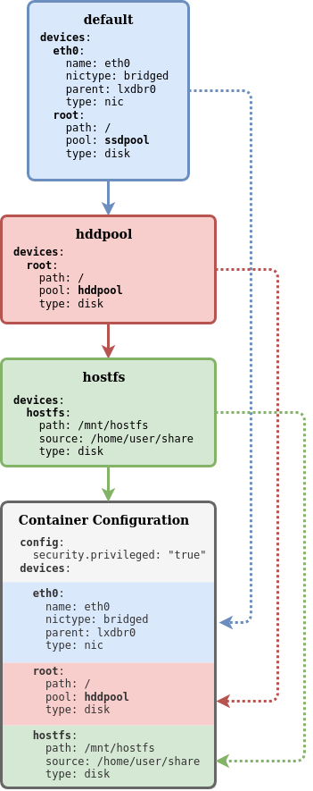

Базовые возможности LXD — системы контейнеров в Linux

LXD — это системный менеджер контейнеров следующего поколения, так гласит источник. Он предлагает пользовательский интерфейс, похожий на виртуальные машины, но использующий вместо этого контейнеры Linux.
Ядро LXD — это привилегированный демон (сервис запущенный с правами root), который предоставляет REST API через локальный unix сокет, а также через сеть, если установлена соответствующая конфигурация. Клиенты, такие как инструмент командной строки поставляемый с LXD посылают запросы через этот REST API. Это означает, что независимо от того, обращаетесь ли вы к локальному хосту или к удаленному, все работает одинаково.
В этой статье мы не будем подробно останавливаться на концепциях LXD, не будем рассматривать все доступные возможности изложенные в документации в том числе реализацию в последних версиях LXD поддержки виртуальных машин QEMU параллельно с контейнерами. Вместо этого мы узнаем только базовые возможности управления контейнерами — настроим пулы хранилищ, сеть, запустим контейнер, применим лимиты на ресурсы, а также рассмотрим как использовать снепшоты, чтобы вы смогли получить базовое представление о LXD и использовать контейнеры в Linux.
Для получения полной информации следует обратиться к официальному источнику:
Инсталляция LXD ^
Прежде чем мы приступим к инсталляции пакета в системе, разберемся с именованием в проекте LXD, чтобы в дальнейшем у нас не было путаницы так как до проекта LXD была реализация проекта LXC одним и тем же автором-разработчиком.
Итак, проект LXD включает в себя два основных бинарных файла:
Большинство команд представленных в статье, будут относится к клиенту командной строки lxc, например lxc init, но также в статье будет рассмотрена команда инициализации LXD — lxd init которую визуально можно спутать с lxc init.
Следующим шагом мы приступим к инсталляции пакета в системе и для этого предлагаю рассмотреть установку на основе двух популярных дистрибутивов и их производных — Ubuntu и Arch Linux. Инсталляция в Ubuntu немного отличается от классической, так как пакет устанавливается как snap-пакет и файловые пути к структуре проекта LXD будут отличаться от тех, что приведены в этой статье, но я думаю вас не затруднит разобраться с этим самостоятельно.
Инсталляция LXD в дистрибутивах Ubuntu ^
В дистрибутиве Ubuntu 19.10 пакет lxd имеет трансляцию на snap-пакет:
apt search lxd
lxd/eoan 1:0.7 all
Transitional package - lxd -> snap (lxd)
Это значит, что будут установлены сразу два пакета, один системный, а другой как snap-пакет. Установка двух пакетов в системе может создать некоторую проблему, при которой системный пакет может стать сиротой, если удалить snap-пакет менеджером snap-пакетов.
Найти пакет lxd в snap-репозитории можно следующей командой:
snap find lxd
Name Version Summary
lxd 3.21 System container manager and API
lxd-demo-server 0+git.6d54658 Online software demo sessions using LXD
nova ocata OpenStack Compute Service (nova)
nova-hypervisor ocata OpenStack Compute Service - KVM Hypervisor (nova)
distrobuilder 1.0 Image builder for LXC and LXD
fabrica 0.1 Build snaps by simply pointing a web form to...
satellite 0.1.2 Advanced scalable Open source intelligence platform
Запустив команду list можно убедится, что пакет lxd еще не установлен:
snap list
Name Version Rev Tracking Publisher Notes
core 16-2.43.3 8689 stable canonical✓ core
Не смотря на то, что LXD является snap-пакетом, устанавливать его нужно через системный пакет lxd, который создаст в системе соответствующую группу, необходимые утилиты в /usr/bin и т.д.
sudo apt update
sudo apt install lxd
Убедимся, что пакет установлен как snap-пакет:
snap list
Name Version Rev Tracking Publisher Notes
core 16-2.43.3 8689 stable canonical✓ core
lxd 3.21 13474 stable/… canonical✓ -
Инсталляция LXD в дистрибутивах Arch Linux ^
Для установки пакета LXD в системе необходимо запустить следующие команды, первая — актуализирует список пакетов в системе доступных в репозитории, вторая — непосредственно установит пакет:
sudo pacman -Syyu && sudo pacman -S lxd
После установки пакета, для управления LXD обычным пользователем, его необходимо добавить в системную группу lxd:
sudo usermod -a -G lxd user1
Убедимся, что пользователь user1 добавлен в группу lxd:
id -Gn user1
user1 adm dialout cdrom floppy sudo audio dip video plugdev netdev lxd
Если группа lxd не видна в списке, тогда нужно активировать сессию пользователя заново. Для этого нужно выйти и зайти в систему под этим же пользователем.
Активируем в systemd загрузку сервиса LXD при старте системы:
sudo systemctl enable lxd
Запускаем сервис:
sudo systemctl start lxd
Проверяем статус сервиса:
sudo systemctl status lxd
Инициализация LXD ^
Прежде чем использовать контейнеры необходимо выполнить инициализацию основных компонент LXD — виртуальную сеть и хранилище в котором будут хранится файлы контейнера, образов и другие файлы. В этом нам поможет мастер инициализации, который инициализирует компоненты после того как мы ответим на его вопросы.
Обзор хранилища LXD (Storage) ^
В этом разделе мы только ознакомимся с хранилищем в LXD, а инициализировать его мы будем немного позже с помощью мастера инициализации.
Хранилище (Storage) состоит из одного или нескольких Storage Pool который использует одну из поддерживаемых файловых систем такие как ZFS, BTRFS, LVM или обычные директории. Каждый Storage Pool разделяется на тома (Storage Volume) которые содержат образы, контейнеры или данные для других целей.

Для управления хранилищем в LXD служит команда lxc storage справку по которой можно получить указав ключ — lxc storage --help
Следующая команда выводит на экран список всех Storage Pool в LXD хранилище:
lxc storage list
+---------+-------------+--------+--------------------------------+---------+
| NAME | DESCRIPTION | DRIVER | SOURCE | USED BY |
+---------+-------------+--------+--------------------------------+---------+
| hddpool | | btrfs | /dev/loop1 | 2 |
+---------+-------------+--------+--------------------------------+---------+
| ssdpool | | btrfs | /var/lib/lxd/disks/ssdpool.img | 4 |
+---------+-------------+--------+--------------------------------+---------+
Для просмотра списка всех Storage Volume в выбранном Storage Pool служит команда lxc storage volume list:
lxc storage volume list hddpool
+-------+----------------------------------+-------------+---------+
| TYPE | NAME | DESCRIPTION | USED BY |
+-------+----------------------------------+-------------+---------+
| image | ebd565585223487526ddb3607f515... | | 1 |
+-------+----------------------------------+-------------+---------+
lxc storage volume list ssdpool
+-----------+----------------------------------+-------------+---------+
| TYPE | NAME | DESCRIPTION | USED BY |
+-----------+----------------------------------+-------------+---------+
| container | alp3 | | 1 |
+-----------+----------------------------------+-------------+---------+
| container | jupyter | | 1 |
+-----------+----------------------------------+-------------+---------+
| image | ebd565585223487526ddb3607f515... | | 1 |
+-----------+----------------------------------+-------------+---------+
Также, если для Storage Pool при создании была выбрана файловая система BTRFS, то получить список Storage Volume или subvolumes в интерпретации BTRFS можно с помощью инструментария этой файловой системы:
sudo btrfs subvolume list -p /var/lib/lxd/storage-pools/hddpool
ID 257 gen 818 parent 5 top level 5 path images/ebd565585223487526ddb3607f5156e875c15a89e21b61ef004132196da6a0a3
sudo btrfs subvolume list -p /var/lib/lxd/storage-pools/ssdpool
ID 257 gen 1820 parent 5 top level 5 path images/ebd565585223487526ddb3607f5156e875c15a89e21b61ef004132196da6a0a3
ID 260 gen 1819 parent 5 top level 5 path containers/jupyter
ID 263 gen 1820 parent 5 top level 5 path containers/alp3
Выбор файловой системы для Storage Pool ^
Во время инициализации LXD задаёт несколько вопросов, среди которых будет определение типа файловой системы для дефолтного Storage Pool. По умолчанию для него выбирается файловая система BTRFS. Поменять на другую ФС после создания будет невозможно. Для выбора ФС предлагается таблица сравнения возможностей:
|
Feature |
Directory |
Btrfs |
LVM |
ZFS |
CEPH |
|
Optimized image storage |
no |
yes |
yes |
yes |
yes |
|
Optimized instance creation |
no |
yes |
yes |
yes |
yes |
|
Optimized snapshot creation |
no |
yes |
yes |
yes |
yes |
|
Optimized image transfer |
no |
yes |
no |
yes |
yes |
|
Optimized instance transfer |
no |
yes |
no |
yes |
yes |
|
Copy on write |
no |
yes |
yes |
yes |
yes |
|
Block based |
no |
no |
yes |
no |
yes |
|
Instant cloning |
no |
yes |
yes |
yes |
yes |
|
Storage driver usable inside a container |
yes |
yes |
no |
no |
no |
|
Restore from older snapshots (not latest) |
yes |
yes |
yes |
no |
yes |
|
Storage quotas |
yes(*) |
yes |
yes |
yes |
no |
Инициализация основных компонент LXD ^
Итак, у нас всё готово для инициализации LXD. Запустите команду вызова мастера инициализации lxd init и введите ответы на вопросы после знака двоеточия так как показано в примере ниже или измените их согласно вашим условиям:
lxd init
Would you like to use LXD clustering? (yes/no) [default=no]:
Do you want to configure a new storage pool? (yes/no) [default=yes]:
Name of the new storage pool [default=default]: ssdpool
Name of the storage backend to use (lvm, btrfs, dir) [default=btrfs]:
Create a new BTRFS pool? (yes/no) [default=yes]:
Would you like to use an existing block device? (yes/no) [default=no]:
Size in GB of the new loop device (1GB minimum) [default=15GB]: 10GB
Would you like to connect to a MAAS server? (yes/no) [default=no]:
Would you like to create a new local network bridge? (yes/no) [default=yes]:
What should the new bridge be called? [default=lxdbr0]:
What IPv4 address should be used? (CIDR subnet notation, “auto” or “none”) [default=auto]: 10.0.5.1/24
Would you like LXD to NAT IPv4 traffic on your bridge? [default=yes]:
What IPv6 address should be used? (CIDR subnet notation, “auto” or “none”) [default=auto]: none
Would you like LXD to be available over the network? (yes/no) [default=no]:
Would you like stale cached images to be updated automatically? (yes/no) [default=yes] no
Would you like a YAML "lxd init" preseed to be printed? (yes/no) [default=no]:
Создание дополнительного Storage Pool ^
В предыдущем шаге мы создали Storage Pool которому дали название ssdpool и файл которого расположился в моей системе по адресу /var/lib/lxd/disks/ssdpool.img. Этот адрес файловой системы соответствует физическому SSD диску в моём ПК.
Следующими действиями, для расширения понимания того, какую роль играет Storage Pool в хранилище, мы создадим второй Storage Pool который будет физически располагаться на другом типе диске, на HDD. Проблема заключается в том, что LXD не позволяет создавать Storage Pool вне адреса /var/lib/lxd/disks/ и даже символические ссылки не будут работать, смотрите ответ разработчика. Обойти это ограничение мы можем при инициализации/форматировании Storage Pool указав значение как блочное устройство вместо пути к loopback-файлу указав это в ключе source.
Итак, до создания Storage Pool необходимо определить loopback-файл или существующий раздел в вашей файловой системе который он будет использовать. Для этого, мы создадим и будем использовать файл который ограничим размером в 10GB:
dd if=/dev/zero of=/mnt/work/lxd/hddpool.img bs=1MB count=10000
10000+0 records in
10000+0 records out
10000000000 bytes (10 GB, 9,3 GiB) copied, 38,4414 s, 260 MB/s
Подключим loopback-файл в свободное loopback-устройство:
sudo losetup --find --show /mnt/work/lxd/hddpool.img
/dev/loop1
Благодаря ключу --show выполнение команды возвращает на экран имя устройства в которое подключился наш loopback-файл. При необходимости, мы можем вывести на экран список всех занятых устройств этого типа, чтобы убедится в корректности наших действий:
losetup -l
NAME SIZELIMIT OFFSET AUTOCLEAR RO BACK-FILE DIO LOG-SEC
/dev/loop1 0 0 0 0 /mnt/work/lxd/hddpool.img 0 512
/dev/loop0 0 0 1 0 /var/lib/lxd/disks/ssdpool.img 0 512
Из списка можно обнаружить, что в устройстве /dev/loop1 подключен loopback-файл /mnt/work/lxd/hddpool.img, а в устройстве /dev/loop0 подключен loopback-файл /var/lib/lxd/disks/ssdpool.img который соответствует дефолтному Storage Pool.
Следующая команда создает новый Storage Pool в LXD на основе только что подготовленного loopback-файла. LXD отформатирует loopback-файл /mnt/work/lxd/hddpool.img в устройстве /dev/loop1 под файловую систему BTRFS:
lxc storage create hddpool btrfs size=10GB source=/dev/loop1
Выведем список всех Storage Pool на экран:
lxc storage list
+---------+-------------+--------+--------------------------------+---------+
| NAME | DESCRIPTION | DRIVER | SOURCE | USED BY |
+---------+-------------+--------+--------------------------------+---------+
| hddpool | | btrfs | /dev/loop1 | 0 |
+---------+-------------+--------+--------------------------------+---------+
| ssdpool | | btrfs | /var/lib/lxd/disks/ssdpool.img | 0 |
+---------+-------------+--------+--------------------------------+---------+
Увеличение размера Storage Pool ^
После создания Storage Pool, при необходимости, его можно расширить. Для Storage Pool основанном на файловой системе BTRFS выполните следующие команды:
sudo truncate -s +5G /mnt/work/lxd/hddpool.img
sudo losetup -c /dev/loop1
sudo btrfs filesystem resize max /var/lib/lxd/storage-pools/hddpool
Автовставка loopback-файла в слот loopback-устройства ^
У нас есть одна небольшая проблема, при перезагруке системы хоста, файл /mnt/work/lxd/hddpool.img "вылетит" из устройства /dev/loop1 и сервис LXD упадет при загрузке так как не увидит его в этом устройстве. Для решения этой проблемы нужно создать системный сервис который будет вставлять этот файл в устройство /dev/loop1 при загрузке системы хоста.
Создадим unit файл типа service в /etc/systemd/system/ для системы инициализации SystemD:
cat << EOF | sudo tee -a /etc/systemd/system/lxd-hddpool.service
[Unit]
Description=Losetup LXD Storage Pool (hddpool)
After=local-fs.target
[Service]
Type=oneshot
ExecStart=/sbin/losetup /dev/loop1 /mnt/work/lxd/hddpool.img
RemainAfterExit=true
[Install]
WantedBy=local-fs.target
EOF
Активируем сервис:
sudo systemctl enable lxd-hddpool
Created symlink /etc/systemd/system/local-fs.target.wants/lxd-hddpool.service → /etc/systemd/system/lxd-hddpool.service.
После рестарта хостовой системы проверяем статус сервиса:
systemctl status lxd-hddpool.service
● lxd-hddpool.service - Losetup LXD Storage Pool (hddpool)
Loaded: loaded (/etc/systemd/system/lxd-hddpool.service; enabled; vendor preset: disabled)
Active: active (exited) since Wed 2020-04-08 03:43:53 MSK; 1min 37s ago
Process: 711 ExecStart=/sbin/losetup /dev/loop1 /mnt/work/lxd/hddpool.img (code=exited, status=0/SUCCESS)
Main PID: 711 (code=exited, status=0/SUCCESS)
апр 08 03:43:52 manjaro systemd[1]: Starting Losetup LXD Storage Pool (hddpool)...
апр 08 03:43:53 manjaro systemd[1]: Finished Losetup LXD Storage Pool (hddpool).
Из вывод мы можем убедиться, что состояние сервиса равно active, несмотря на то, что выполнение нашего скрипта из одной команды завершилось, это позволила нам сделать опция RemainAfterExit=true.
Безопасность. Привилегии контейнеров ^
Так как все процессы контейнера фактически исполняются в изоляции на хостовой системе используя его ядро, то для дополнительной защиты доступа процессов контейнера к системе хоста LXD предлагает привилегированность процессов, где:
По умолчанию, вновь создаваемые контейнеры имеют статус непривилегированных и поэтому мы должны определить SubUID и SubGID.
Создадим два конфигурационных файла в которых зададим маску для SubUID и SubGID соответственно:
sudo touch /etc{/subuid,/subgid}
sudo usermod --add-subuids 1000000-1065535 root
sudo usermod --add-subgids 1000000-1065535 root
Для применения изменений, сервис LXD должен быть рестартован:
sudo systemctl restart lxd
Создание виртуального коммутатора сети ^
Так как мы ранее инициализировали сеть с помощью мастера инициализации lxd init и создали сетевое устройство lxdbr0, то в этом разделе мы просто ознакомимся с сетью в LXD и с тем, как создавать виртуальный коммутатор (сетевой мост, bridge) с помощью команды клиента.
Следующая схема демонстрирует как коммутатор (сетевой мост, bridge) объединяет хост и контейнеры в сеть:

Контейнеры могут взаимодействовать посредством сети с другими контейнерами или хостом на котором эти контейнеры обслуживаются. Для этого необходимо слинковать виртуальные сетевые карты контейнеров с виртуальным коммутатором. В начале создадим коммутатор, а сетевые интерфейсы контейнера будут слинкованы в последующих главах, после того как будет создан сам контейнер.
Следующая команда создаёт коммутатор с подсетью 10.0.5.0/24 и IPv4 адресом 10.0.5.1/24, а также включает ipv4.nat чтобы контейнеры смогли получать интернет через хост с помощью службы NAT:
lxc network create lxdbr0 ipv4.address=10.0.5.1/24 ipv4.nat=true ipv6.address=none
Проверяем список сетевых устройств доступных LXD:
lxc network list
+--------+----------+---------+-------------+---------+
| NAME | TYPE | MANAGED | DESCRIPTION | USED BY |
+--------+----------+---------+-------------+---------+
| eno1 | physical | NO | | 0 |
+--------+----------+---------+-------------+---------+
| lxdbr0 | bridge | YES | | 0 |
+--------+----------+---------+-------------+---------+
Также, убедится в создании сетевого устройства можно с помощью штатного стредства Linux-дистрибутива — ip link или ip addr:
ip addr
1: lo: <LOOPBACK,UP,LOWER_UP> mtu 65536 qdisc noqueue state UNKNOWN group default qlen 1000
link/loopback 00:00:00:00:00:00 brd 00:00:00:00:00:00
inet 127.0.0.1/8 scope host lo
valid_lft forever preferred_lft forever
inet6 ::1/128 scope host
valid_lft forever preferred_lft forever
2: eno1: <BROADCAST,MULTICAST,UP,LOWER_UP> mtu 1500 qdisc fq_codel state UP group default qlen 1000
link/ether bc:ee:7b:5a:6b:44 brd ff:ff:ff:ff:ff:ff
altname enp0s25
inet6 fe80::9571:11f3:6e0c:c07b/64 scope link noprefixroute
valid_lft forever preferred_lft forever
3: lxdbr0: <BROADCAST,MULTICAST,UP,LOWER_UP> mtu 1500 qdisc noqueue state UP group default qlen 1000
link/ether c2:38:90:df:cb:59 brd ff:ff:ff:ff:ff:ff
inet 10.0.5.1/24 scope global lxdbr0
valid_lft forever preferred_lft forever
inet6 fe80::c038:90ff:fedf:cb59/64 scope link
valid_lft forever preferred_lft forever
5: veth3ddab174@if4: <BROADCAST,MULTICAST,UP,LOWER_UP> mtu 1500 qdisc noqueue master lxdbr0 state UP group default qlen 1000
link/ether ca:c3:5c:1d:22:26 brd ff:ff:ff:ff:ff:ff link-netnsid 0
Профиль конфигурации ^
Каждый контейнер в LXD имеет свою собственную конфигурацию и может расширять её с помощью глобально декларируемых конфигураций которые называются профилями конфигурации. Применение профилей конфигурации к контейнеру имеет каскадную модель, следующий пример демонстрирует это:

В этом примере, в системе LXD созданы три профиля: default, hddpool и hostfs. Все три профиля применены к контейнеру у которого имеется локальная конфигурация (серая зона). Профиль default имеет устройство root у которого параметр pool равен ssdpool, но благодаря каскадной модели применения конфигурации мы можем применить для контейнера профиль hddpool у которого параметр pool перекроет этот же параметр из профиля default и контейнер получит конфигурацию устройства root с параметром pool равным hddpool, а профиль hostfs просто добавляет новое устройство в контейнер.
Выведем на экран список всех доступных профилей конфигурации:
lxc profile list
+---------+---------+
| NAME | USED BY |
+---------+---------+
| default | 1 |
+---------+---------+
| hddroot | 0 |
+---------+---------+
| ssdroot | 1 |
+---------+---------+
Полный список доступных команд для управления профилями можно получить добавив ключ --help:
lxc profile --help
Description:
Manage profiles
Usage:
lxc profile [command]
Available Commands:
add Add profiles to instances
assign Assign sets of profiles to instances
copy Copy profiles
create Create profiles
delete Delete profiles
device Manage instance devices
edit Edit profile configurations as YAML
get Get values for profile configuration keys
list List profiles
remove Remove profiles from instances
rename Rename profiles
set Set profile configuration keys
show Show profile configurations
unset Unset profile configuration keys
Редактирование профиля ^
Профиль конфигурации по умолчанию default не имеет конфигурации сетевого интерфейса и все вновь создаваемые контейнеры не получают сеть. Для них необходимо создавать отдельными командами локальные сетевые интерфейсы, но мы можем создать в профиле конфигурации глобальный сетевой интерфейс который будет разделяться между всеми контейнерами использующими этот профиль. Таким образом, сразу после команды создания нового контейнера он получит сеть с доступом в интернет. При этом, нет ограничений, мы всегда можем позже создать локальный сетевой интерфейс для контейнера если будет в этом необходимость и/или удалить интерфейс из профиля.
Следующая команда добавит в профиль конфигурации устройство eth0 типа nic присоединяемого к сети lxdbr0:
lxc profile device add default eth0 nic network=lxdbr0 name=eth0
Важно отметить, что так как мы фактически добавили устройство в профиль конфигурации, то если бы мы указали в устройстве статический IP адрес, то все контейнеры которые будут применять этот профиль разделят один и тот же IP адрес. Если есть необходимость создать контейнер с выделенным для контейнера статическим IP адресом, тогда следует создать конфигурацию сетевого устройства на уровне контейнера (локальная конфигурация) с параметром IP адреса, а не на уровне профиля.
Проверим профиль:
lxc profile show default
config: {}
description: Default LXD profile
devices:
eth0:
name: eth0
network: lxdbr0
type: nic
root:
path: /
pool: ssdpool
type: disk
name: default
used_by: []
В этом профиле мы можем увидеть, что для всех вновь создаваемых контейнеров будут созданы два устройства (devices):
Создание новых профилей ^
Для использования ранее созданных Storage Pool контейнерами, создадим профиль конфигурации ssdroot в котором добавим устройство типа disk с точкой монтирования / (root) использующее ранее созданное Storage Pool — ssdpool:
lxc profile create ssdroot
lxc profile device add ssdroot root disk path=/ pool=ssdpool
Аналогично, создаем устройство типа disk, но в этом случае использующее Storage Pool — hddpool:
lxc profile create hddroot
lxc profile device add hddroot root disk path=/ pool=hddpool
Проверяем профили конфигурации:
lxc profile show ssdroot
config: {}
description: ""
devices:
root:
path: /
pool: ssdpool
type: disk
name: ssdroot
used_by: []
lxc profile show hddroot
config: {}
description: ""
devices:
root:
path: /
pool: hddpool
type: disk
name: hddroot
used_by: []
Репозиторий образов ^
Контейнеры создаются из образов которые являются специально собранными дистрибутивами не имеющие ядра Linux. Поэтому, прежде чем запустить контейнер, он должен быть развернут из этого образа. Источником образов служит локальный репозиторий в который образы загружаются из внешних репозиториев.
Удаленные репозитории образов ^
По умолчанию LXD настроен на получение образов из трёх удаленных источников:
lxc remote list
+-----------------+------------------------------------------+--------+--------+
| NAME | URL | PUBLIC | STATIC |
+-----------------+------------------------------------------+--------+--------+
| images | https://images.linuxcontainers.org | YES | NO |
+-----------------+------------------------------------------+--------+--------+
| local (default) | unix:// | NO | YES |
+-----------------+------------------------------------------+--------+--------+
| ubuntu | https://cloud-images.ubuntu.com/releases | YES | YES |
+-----------------+------------------------------------------+--------+--------+
| ubuntu-daily | https://cloud-images.ubuntu.com/daily | YES | YES |
+-----------------+------------------------------------------+--------+--------+
Например, репозиторий ubuntu: имеет следующие образы:
lxc image -c dasut list ubuntu: | head -n 11
+----------------------------------------------+--------------+----------+------------+
| DESCRIPTION | ARCHITECTURE | SIZE | TYPE |
+----------------------------------------------+--------------+----------+------------+
| ubuntu 12.04 LTS amd64 (release) (20150728) | x86_64 | 153.72MB | CONTAINER |
+----------------------------------------------+--------------+----------+------------+
| ubuntu 12.04 LTS amd64 (release) (20150819) | x86_64 | 152.91MB | CONTAINER |
+----------------------------------------------+--------------+----------+------------+
| ubuntu 12.04 LTS amd64 (release) (20150906) | x86_64 | 154.69MB | CONTAINER |
+----------------------------------------------+--------------+----------+------------+
| ubuntu 12.04 LTS amd64 (release) (20150930) | x86_64 | 153.86MB | CONTAINER |
+----------------------------------------------+--------------+----------+------------+
Чтобы вывести ограниченное количество колонок мы использовали опцию -c с параметрами dasut, а также ограничили длину списка командой head.
Для вывода списка образов доступна фильтрация. Следующая команда выведет список всех доступных архитектур дистрибутива AlpineLinux:
lxc image -c ldast list images:alpine/3.11
+------------------------------+--------------------------------------+--------------+
| ALIAS | DESCRIPTION | ARCHITECTURE |
+------------------------------+--------------------------------------+--------------+
| alpine/3.11 (3 more) | Alpine 3.11 amd64 (20200220_13:00) | x86_64 |
+------------------------------+--------------------------------------+--------------+
| alpine/3.11/arm64 (1 more) | Alpine 3.11 arm64 (20200220_13:00) | aarch64 |
+------------------------------+--------------------------------------+--------------+
| alpine/3.11/armhf (1 more) | Alpine 3.11 armhf (20200220_13:00) | armv7l |
+------------------------------+--------------------------------------+--------------+
| alpine/3.11/i386 (1 more) | Alpine 3.11 i386 (20200220_13:01) | i686 |
+------------------------------+--------------------------------------+--------------+
| alpine/3.11/ppc64el (1 more) | Alpine 3.11 ppc64el (20200220_13:00) | ppc64le |
+------------------------------+--------------------------------------+--------------+
| alpine/3.11/s390x (1 more) | Alpine 3.11 s390x (20200220_13:00) | s390x |
+------------------------------+--------------------------------------+--------------+
Локальный репозиторий образов ^
Для начала эксплуатации контейнера необходимо добавить образ из глобального репозитория в локальный local:. Сейчас локальный репозиторий пуст, убедится в этом нам даст команда lxc image list. Если методу list не указать репозиторий, то по умолчанию будет использоваться локальный репозиторий — local:
lxc image list local:
+-------+-------------+--------+-------------+--------------+------+------+
| ALIAS | FINGERPRINT | PUBLIC | DESCRIPTION | ARCHITECTURE | TYPE | SIZE |
+-------+-------------+--------+-------------+--------------+------+------+
Управление образами в репозитории производится следующими методами:
|
Команда |
Описание |
|
lxc image alias |
Manage image aliases |
|
lxc image copy |
Copy images between servers |
|
lxc image delete |
Delete images |
|
lxc image edit |
Edit image properties |
|
lxc image export |
Export and download images |
|
lxc image import |
Import images into the image store |
|
lxc image info |
Show useful information about images |
|
lxc image list |
List images |
|
lxc image refresh |
Refresh images |
|
lxc image show |
Show image properties |
Копируем образ в локальный репозиторий из глобального images::
lxc image copy images:alpine/3.11/amd64 local: --alias=alpine3
Image copied successfully!
Выведем список всех образов доступных сейчас в локальном репозитории local::
lxc image -c lfdatsu list local:
+---------+--------------+------------------------------------+--------------+
| ALIAS | FINGERPRINT | DESCRIPTION | ARCHITECTURE |
+---------+--------------+------------------------------------+--------------+
| alpine3 | 73a3093d4a5c | Alpine 3.11 amd64 (20200220_13:00) | x86_64 |
+---------+--------------+------------------------------------+--------------+
Конфигурация LXD ^
Кроме интерактивного режима, LXD поддерживает также неинтерактивный режим установки конфигурации, это когда конфигурация задается в виде YAML-файла, специального формата, который позволяет установить всю конфигурацию за один раз, минуя выполнения множества интерактивных команд которые были рассмотрены выше в этой статье, в том числе конфигурацию сети, создание профилей конфигурации и т.д. Здесь мы не будем рассматривать эту область, вы можете самостоятельно ознакомится с этим в документации.
Следующая интерактивная команда lxc config которую мы рассмотрим, позволяет устанавливать конфигурацию. Например, для того, чтобы загруженные образы в локальный репозиторий не обновлялись автоматически из глобальных репозиториев, мы можем включить это поведение следующей командой:
lxc config set images.auto_update_cached=false
Создание и управление контейнером ^
Для создания контейнера служит команда lxc init которой передаются значения репозиторий:образ и затем желаемый идентификатор для контейнера. Репозиторий может быть указан как локальный local: так и любой глобальный. Если репозиторий не указан, то по умолчанию, для поиска образа используется локальный репозиторий. Если образ указан из глобального репозитория, то в начале образ будет загружен в локальный репозиторий, а затем использован для создания контейнера.
Выполним следующую команду чтобы создать наш первый контейнер:
lxc init alpine3 alp --storage=hddpool --profile=default --profile=hddroot
Разберем по порядку ключи команды которые мы здесь используем:
Запускаем контейнер, который начинает запускать init-систему дистрибутива:
lxc start alp
Также, можно воспользоваться командой lxc launch которая позволяет объединить команды lxc init и lxc start в одну операцию.
Проверяем состояние контейнера:
lxc list -c ns46tb
+------+---------+------------------+------+-----------+--------------+
| NAME | STATE | IPV4 | IPV6 | TYPE | STORAGE POOL |
+------+---------+------------------+------+-----------+--------------+
| alp | RUNNING | 10.0.5.46 (eth0) | | CONTAINER | hddpool |
+------+---------+------------------+------+-----------+--------------+
Проверяем конфигурацию контейнера:
lxc config show alp
architecture: x86_64
config:
image.architecture: amd64
image.description: Alpine 3.11 amd64 (20200326_13:39)
image.os: Alpine
image.release: "3.11"
image.serial: "20200326_13:39"
image.type: squashfs
volatile.base_image: ebd565585223487526ddb3607f5156e875c15a89e21b61ef004132196da6a0a3
volatile.eth0.host_name: vethb1fe71d8
volatile.eth0.hwaddr: 00:16:3e:5f:73:3e
volatile.idmap.base: "0"
volatile.idmap.current: '[{"Isuid":true,"Isgid":false,"Hostid":1000000,"Nsid":0,"Maprange":65536},{"Isuid":false,"Isgid":true,"Hostid":1000000,"Nsid":0,"Maprange":65536}]'
volatile.idmap.next: '[{"Isuid":true,"Isgid":false,"Hostid":1000000,"Nsid":0,"Maprange":65536},{"Isuid":false,"Isgid":true,"Hostid":1000000,"Nsid":0,"Maprange":65536}]'
volatile.last_state.idmap: '[{"Isuid":true,"Isgid":false,"Hostid":1000000,"Nsid":0,"Maprange":65536},{"Isuid":false,"Isgid":true,"Hostid":1000000,"Nsid":0,"Maprange":65536}]'
volatile.last_state.power: RUNNING
devices:
root:
path: /
pool: hddpool
type: disk
ephemeral: false
profiles:
- default
- hddroot
stateful: false
description: ""
В секции profiles мы можем убедиться, что этот контейнер использует два профиля конфигурации — default и hddroot. В секции devices мы можем обнаружить только одно устройство, так как сетевое устройство было создано на уровне профиля default. Для того, чтобы увидеть все устройства используемые контейнером необходимо добавить ключ --expanded:
lxc config show alp --expanded
architecture: x86_64
config:
image.architecture: amd64
image.description: Alpine 3.11 amd64 (20200326_13:39)
image.os: Alpine
image.release: "3.11"
image.serial: "20200326_13:39"
image.type: squashfs
volatile.base_image: ebd565585223487526ddb3607f5156e875c15a89e21b61ef004132196da6a0a3
volatile.eth0.host_name: vethb1fe71d8
volatile.eth0.hwaddr: 00:16:3e:5f:73:3e
volatile.idmap.base: "0"
volatile.idmap.current: '[{"Isuid":true,"Isgid":false,"Hostid":1000000,"Nsid":0,"Maprange":65536},{"Isuid":false,"Isgid":true,"Hostid":1000000,"Nsid":0,"Maprange":65536}]'
volatile.idmap.next: '[{"Isuid":true,"Isgid":false,"Hostid":1000000,"Nsid":0,"Maprange":65536},{"Isuid":false,"Isgid":true,"Hostid":1000000,"Nsid":0,"Maprange":65536}]'
volatile.last_state.idmap: '[{"Isuid":true,"Isgid":false,"Hostid":1000000,"Nsid":0,"Maprange":65536},{"Isuid":false,"Isgid":true,"Hostid":1000000,"Nsid":0,"Maprange":65536}]'
volatile.last_state.power: RUNNING
devices:
eth0:
name: eth0
network: lxdbr0
type: nic
root:
path: /
pool: hddpool
type: disk
ephemeral: false
profiles:
- default
- hddroot
stateful: false
description: ""
Установка статического IP адреса ^
Если мы попытаемся установить IP адрес для сетевого устройства eth0 командой lxc config device set alp предназначенной для конфигурации контейнера, то мы получим ошибку которая сообщит, что устройство не существует потому что устройство eth0 которое используется контейнером принадлежит профилю default:
lxc config device set alp eth0 ipv4.address 10.0.5.5
Error: The device doesn't exist
Мы можем конечно установить статический IP адрес для eth0 устройства в профиле, но он будет един для всех контейнеров которые этот профиль будут использовать. Поэтому, добавим выделенное для контейнера устройство:
lxc config device add alp eth0 nic name=eth0 nictype=bridged parent=lxdbr0 ipv4.address=10.0.5.5
В новых версиях LXD 3.21 и выше доступна улучшенная команда создания интерфейса для сетевого моста (bridge network), сейчас можно просто указать значение параметра network, исключив указание значений для nictype и parent:
lxc config device add alp eth0 nic name=eth0 network=lxdbr0 ipv4.address=10.0.5.5
Затем следует рестартовать контейнер:
lxc restart alp
Если мы сейчас посмотрим на конфигурацию контейнера, то нам не нужно применять опцию --expanded чтобы увидеть сетевое устройство eth0, так как мы создали его на уровне контейнера и оно каскадно перекрыло это же устройство из профиля default:
lxc config show alp
architecture: x86_64
config:
image.architecture: amd64
image.description: Alpine 3.11 amd64 (20200326_13:39)
image.os: Alpine
image.release: "3.11"
image.serial: "20200326_13:39"
image.type: squashfs
volatile.base_image: ebd565585223487526ddb3607f5156e875c15a89e21b61ef004132196da6a0a3
volatile.eth0.host_name: veth2a1dc59d
volatile.eth0.hwaddr: 00:16:3e:0e:e2:71
volatile.idmap.base: "0"
volatile.idmap.current: '[{"Isuid":true,"Isgid":false,"Hostid":1000000,"Nsid":0,"Maprange":65536},{"Isuid":false,"Isgid":true,"Hostid":1000000,"Nsid":0,"Maprange":65536}]'
volatile.idmap.next: '[{"Isuid":true,"Isgid":false,"Hostid":1000000,"Nsid":0,"Maprange":65536},{"Isuid":false,"Isgid":true,"Hostid":1000000,"Nsid":0,"Maprange":65536}]'
volatile.last_state.idmap: '[{"Isuid":true,"Isgid":false,"Hostid":1000000,"Nsid":0,"Maprange":65536},{"Isuid":false,"Isgid":true,"Hostid":1000000,"Nsid":0,"Maprange":65536}]'
volatile.last_state.power: RUNNING
devices:
eth0:
ipv4.address: 10.0.5.5
name: eth0
nictype: bridged
parent: lxdbr0
type: nic
root:
path: /
pool: hddpool
type: disk
ephemeral: false
profiles:
- default
- hddroot
stateful: false
description: ""
Доступ к контейнеру ^
Для выполнения команд в контейнере, напрямую, минуя сетевые соединения, служит команда lxc exec которая выполняет команды в контейнере без запуска системной оболочки. Если вам нужно выполнить команду в оболочке, используя shell паттерны, такие как переменные, файловые перенаправления (pipe) и т.д., то необходимо явно запускать оболочку и передавать команду в качестве ключа, например:
lxc exec alp -- /bin/sh -c "echo \$HOME"
В команде был задействован спецсимвол экранирования \ для спецсимвола $ чтобы переменная $HOME не интерпретировалась на хостовой машине, а была интерпретирована только внутри контейнера.
Также, возможно запустить интерактивный режим оболочки, а после завершить сеанс выполнив hotkey CTRL+D:
lxc exec alp -- /bin/sh
Управление ресурсами контейнера ^
В LXD можно управлять ресурсами контейнера при помощи специального набора конфигурации. Полный список конфигурационных параметров контейнера можно найти в документации.
Ограничение ресурсов RAM (ОЗУ) ^
Параметр limits.memory ограничивает объём RAM доступный для контейнера. В качестве значения указывается число и один из доступных суффиксов.
Зададим контейнеру ограничение на объём RAM равный 256 MB:
lxc config set alp limits.memory 256MB
Также, существуют другие параметры для ограничения памяти:
Команда lxc config show позволяет вывести на экран всю конфигурацию контейнера, в том числе примененное ограничение ресурсов которое было установлено:
lxc config show alp
architecture: x86_64
config:
image.architecture: amd64
image.description: Alpine 3.11 amd64 (20200220_13:00)
image.os: Alpine
image.release: "3.11"
image.serial: "20200220_13:00"
image.type: squashfs
limits.memory: 256MB
volatile.base_image: 73a3093d4a5ce0148fd84b95369b3fbecd19a537ddfd2e2d20caa2eef0e8fd60
volatile.eth0.host_name: veth75b6df07
volatile.eth0.hwaddr: 00:16:3e:a1:e7:46
volatile.idmap.base: "0"
volatile.idmap.current: '[]'
volatile.idmap.next: '[]'
volatile.last_state.idmap: '[]'
volatile.last_state.power: RUNNING
devices: {}
ephemeral: false
profiles:
- default
stateful: false
description: ""
Ограничение ресурсов CPU (ЦП) ^
Для ограничения ресурсов ЦП существует несколько типов ограничений:
lxc config set alp limits.cpu.allowance 40%
lxc config show alp
architecture: x86_64
config:
image.architecture: amd64
image.description: Alpine 3.11 amd64 (20200220_13:00)
image.os: Alpine
image.release: "3.11"
image.serial: "20200220_13:00"
image.type: squashfs
limits.cpu.allowance: 40%
limits.memory: 256MB
volatile.base_image: 73a3093d4a5ce0148fd84b95369b3fbecd19a537ddfd2e2d20caa2eef0e8fd60
volatile.eth0.host_name: veth75b6df07
volatile.eth0.hwaddr: 00:16:3e:a1:e7:46
volatile.idmap.base: "0"
volatile.idmap.current: '[]'
volatile.idmap.next: '[]'
volatile.last_state.idmap: '[]'
volatile.last_state.power: RUNNING
devices: {}
ephemeral: false
profiles:
- default
stateful: false
description: ""
Ограничение дискового пространства ^
Кроме ограничений таких как limits.read, limits.write мы также можем ограничить объём потребления контейнером дискового пространства (работает только с ZFS или BTRFS):
lxc config device set alp root size=2GB
После установки, в параметре devices.root.size мы можем убедится в установленном ограничении:
lxc config show alp
...
devices:
root:
path: /
pool: hddpool
size: 2GB
type: disk
ephemeral: false
profiles:
- default
- hddroot
stateful: false
description: ""
Для просмотра используемых квот на диск мы можем получить из команды lxc info:
lxc info alp
...
Resources:
Processes: 5
Disk usage:
root: 1.05GB
CPU usage:
CPU usage (in seconds): 1
Memory usage:
Memory (current): 5.46MB
Network usage:
eth0:
Bytes received: 802B
Bytes sent: 1.59kB
Packets received: 4
Packets sent: 14
lo:
Bytes received: 0B
Bytes sent: 0B
Packets received: 0
Packets sent: 0
Не смотря на то, что мы установили ограничение для корневого устройства контейнера в 2GB, системные утилиты такие как df не будут видеть это ограничение. Для этого мы проведем небольшой тест и выясним как это работает.
Создадим 2 новых одинаковых контейнера в одном и том же Storage Pool (hddpool):
lxc init alpine3 alp1 --storage=hddpool --profile=default --profile=hddroot
lxc init alpine3 alp2 --storage=hddpool --profile=default --profile=hddroot
lxc list
+------+---------+------------------+------+-----------+-----------+
| NAME | STATE | IPV4 | IPV6 | TYPE | SNAPSHOTS |
+------+---------+------------------+------+-----------+-----------+
| alp1 | RUNNING | 10.0.5.46 (eth0) | | CONTAINER | 0 |
+------+---------+------------------+------+-----------+-----------+
| alp2 | RUNNING | 10.0.5.30 (eth0) | | CONTAINER | 0 |
+------+---------+------------------+------+-----------+-----------+
В одном из контейнеров создадим файл размером 1GB:
lxc exec alp1 -- dd if=/dev/urandom of=file.img bs=1M count=1000
Убедимся, что файл создан:
lxc exec alp1 -- ls -lh
total 1000M
-rw-r--r-- 1 root root 1000.0M Mar 27 10:16 file.img
Если мы посмотрим во втором контейнере, проверим существование файла в том же самом месте, то этого файла не будет, что ожидаемо, так как контейнеры создаются в своих собственных Storage Volume в этом же Storage Pool:
lxc exec alp2 -- ls -lh
total 0
Но давайте сравним значения которые выдает df на одном и другом контейнерах:
lxc exec alp1 -- df -hT
Filesystem Type Size Used Available Use% Mounted on
/dev/loop1 btrfs 9.3G 1016.4M 7.8G 11% /
...
lxc exec alp2 -- df -hT
Filesystem Type Size Used Available Use% Mounted on
/dev/loop1 btrfs 9.3G 1016.4M 7.8G 11% /
...
Устройство /dev/loop1 смонтированное как корневой раздел является Storage Pool которое эти контейнеры используют, поэтому они разделяют его объём на двоих.
Статистика потребления ресурсов ^
Просмотреть статистику потребления ресурсов для контейнера можно с помощью команды:
lxc info alp
Name: alp
Location: none
Remote: unix://
Architecture: x86_64
Created: 2020/04/08 18:05 UTC
Status: Running
Type: container
Profiles: default, hddroot
Pid: 19219
Ips:
eth0: inet 10.0.5.5 veth2a1dc59d
eth0: inet6 fe80::216:3eff:fe0e:e271 veth2a1dc59d
lo: inet 127.0.0.1
lo: inet6 ::1
Resources:
Processes: 5
Disk usage:
root: 495.62kB
CPU usage:
CPU usage (in seconds): 1
Memory usage:
Memory (current): 4.79MB
Network usage:
eth0:
Bytes received: 730B
Bytes sent: 1.59kB
Packets received: 3
Packets sent: 14
lo:
Bytes received: 0B
Bytes sent: 0B
Packets received: 0
Packets sent: 0
Работа со снепшотами ^
В LXD имеется возможность создания снепшотов и восстановления из них состояния контейнера.
Чтобы создать снепшот, выполните следующую команду:
lxc snapshot alp snapshot1
У команды lxc snapshot не имеется ключа list, поэтому, чтобы просмотреть список снепшотов нужно воспользоваться командой выводящей общую информацию о контейнере:
lxc info alp
...
...
Snapshots:
snapshot1 (taken at 2020/04/08 18:18 UTC) (stateless)
Восстановить контейнер из снепшота можно командой lxc restore указав контейнер для которого будет произведено восстановление и псевдоним снепшота:
lxc restore alp snapshot1
Следующая команда служит для удаления снепшота. Обратите внимание, что синтаксис команды не похож на все остальные, здесь необходимо указать прямой слеш после имени контейнера. Если слеш опустить, то команда удаления снепшота интерпретируется как команда удаления контейнера!
lxc delete alp/snapshot1
В приведённом выше примере мы рассмотрели так называемые stateless-снепшоты. В LXD есть и другой тип снепшотов — stateful, в которых сохраняется текущее состояние всех процессов в контейнере. Со stateful-снепшотами связаны ряд интересных и полезных функций.
Удаление контейнера ^
Для удаления контейнера служит команда lxc delete, но прежде чем удалить контейнер, он должен быть остановлен с помощью команды lxc stop:
lxc stop alp
lxc list
+------+---------+-------------------+------+-----------+-----------+
| NAME | STATE | IPV4 | IPV6 | TYPE | SNAPSHOTS |
+------+---------+-------------------+------+-----------+-----------+
| alp | STOPPED | 10.0.5.10 (eth0) | | CONTAINER | 0 |
+------+---------+-------------------+------+-----------+-----------+
После того как мы убедились, что состояние контейнера стало STOPPED, его можно удалить из Storage Pool:
lxc delete alp
Экспорт контейнеров ^
Чтобы вы не утратили плоды своих трудов в контейнерах, в LXD предусмотрена команда экспорта контейнера:
lxc export alp /backups/alp.tar.gz --instance-only
Что ещё? ^
UPDATE 10.04.2020 15:00: Добавил навигацию
UPDATE 11.04.2020 06:00: Исправил ошибки в тексте благодаря ребятам отписавшимся в личку. Спасибо огромное!
UPDATE 11.04.2020 07:30: Добавил информацию в раздел "Инсталляция LXD"
UPDATE 11.04.2020 08:40: Немного реорганизовал разделы, подправил и дополнил текст
UPDATE 14.04.2020 16:10: Добавил информацию о экспорте контейнеров
Теги:
Хабы:
295k 808
106k 230
12,8k 100
3,5k 7
7,9k 24
41,2k 164
Мегапост
Присылаем лучшие статьи раз в месяц
+31
Пользователь
Похожие публикации
Linux-контейнеры: когда контейнеров становится больше
+9 15k 100 8
Создание метода клонирования LXC-контейнеров
+14 6,4k 50 10
CRIU 0.2 и Linux Containers — новые возможности
+9 4,6k 16 0